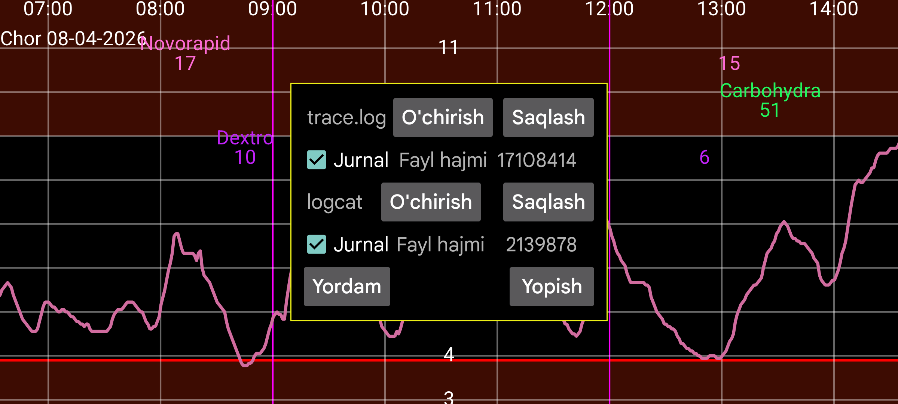

Jurnal oynasida Juggluco ning ichki hodisalari, ulanishlari, qayta ulanishlari va xatolari ko‘rinadi. U ayniqsa sensorga ulanish, Mirror, Nightscout, veb server va boshqa ma’lumot almashish muammolarini topishda foydali.
Jurnalni o‘qiyotganda vaqt tartibiga e’tibor bering: qaysi amal bajarilgandan keyin qaysi xabar paydo bo‘lganini ko‘rish muhim. Shu usul bilan nosozlik aynan qaysi bosqichda yuz berayotganini topish osonlashadi.
Agar muammo sensor bilan bog‘liq bo‘lsa, Sensor yordam sahifasini ham ko‘ring. Tarmoq yoki qurilmalar o‘rtasidagi almashuv muammolari uchun Mirror va Ulanish qo‘shish foydali bo‘ladi. Veb xizmatlar bilan bog‘liq holatlarda Nightscout / veb server sahifasiga qarang.